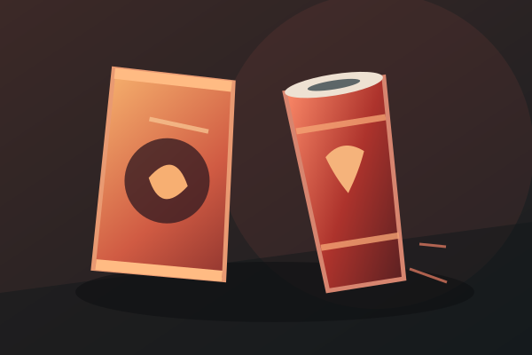

01 / FOOD

SUGARY DRINKS
ARE GOOD FOR HEALTH.*
Because “fruit-flavoured” is basically a fruit salad, right? *No. This is sarcasm: frequent sugary drinks are not a healthy choice.
SHADY CLAIM #01 / ZERO EVIDENCE